概述
本节课是25fall的最后一篇笔记，学习计组的最后一部分内容：总线和输入输出系统
（一）I/O系统总体概念 & 设计原则
1.I/O系统与典型结构
- I/O系统组成：主机 + 各种 I/O 设备（键盘、显示器、鼠标、磁盘、网络接口等）+ I/O 相关电路 + 控制软件。作用是完成数据的输入和输出。
- 典型结构：
- CPU、内存、多个“设备接口”都挂在系统总线上；
- 具体 I/O 设备通过各自的接口与系统总线相连。
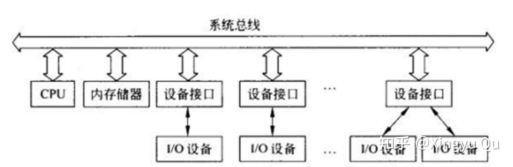
总结：系统总线是各种信号线的集合（地址、数据、控制）。
2.I/O设计三个重要原则
（1）抽象原则
- 设备种类很多，但和主机交互时：数据格式、传输方式、同步机制等是有限的。
- 通过抽象，提炼共性，建立统一的 I/O 模型与接口。
（2）分治原则
I/O 是主机与设备的协作问题，用“接口”把双方隔离，只需设计好：
- CPU ↔ 接口的数据交换；
- 设备 ↔ 接口的数据交换；
- 接口协调双方的同步
这样主机和具体设备可以相对独立演化。
（3）标准原则
- 要求：可靠、可用、可信；
- 形成标准/规范，后续新设备只要遵守标准即可接入。
（二）四种I/O方式：无条件、查询、中断、DMA
1. 无条件传送方式
- 特点：
- CPU 与设备直接收发数据，不检查对方是否已经准备就绪；
- 这种方式不包含显式握手机制。
- 优点：控制简单。
- 缺点：完全不考虑同步，容易丢失数据或读取无效数据。几乎只适用于极少数简单场合。
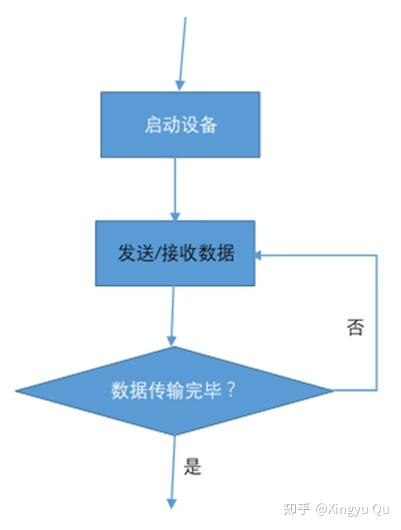
2. 查询（轮询）方式
- 基本思想：
- “有条件的收发”：在读写数据前，CPU 首先查询状态寄存器/状态端口里的状态位，看设备是否准备就绪；
- 若条件满足，再进行一次数据传输。
- 同步实现：
通过专门的握手信号与握手协议：
- 例如：发送方拉高“请求”线，接收方拉高“应答”线等；
- 协议描述“谁先做什么，然后谁再做什么……”。
- 优点：实现简单，比无条件方式安全。
- 缺点：CPU 必须不断轮询状态位，空等浪费大量时间 → CPU 利用率低。
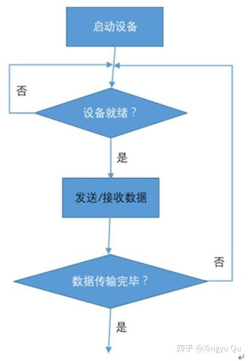
3. 中断方式
（1）基本概念
- 中断：程序执行过程中，因内部或外部事件，CPU 暂停当前程序，转去执行中断服务程序，完成处理后再返回。
- 异常：由异常事件引起的中断（例如除零、缺页等）。
- 中断是重要的 I/O 交互方式：设备准备好数据，用中断请求 CPU 来处理。
（2） 中断处理的五个步骤
- 中断请求：I/O 设备通过中断请求线（如 INTR）向 CPU 发请求；
- 中断检测：CPU 在执行指令过程中定期检测中断请求线；
- 中断响应：CPU 认可请求，发响应信号（如 INTA），保存现场，跳转到中断服务程序入口；
- 中断服务：执行中断服务程序，完成数据读/写或其他处理；
- 中断返回：通过专门指令恢复现场，回到被中断程序继续执行。
- 中断源：一切能引发中断的事件/设备；
- 中断服务程序：针对某种中断编写好的处理代码。
（3）单中断与多中断、优先级与嵌套
- 单中断系统
- 只有一个中断源，中断处理流程较简单：检测 → 响应 → 服务 → 返回（图示一条分叉再合并的时间线）。
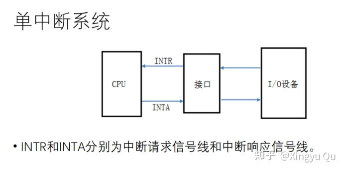
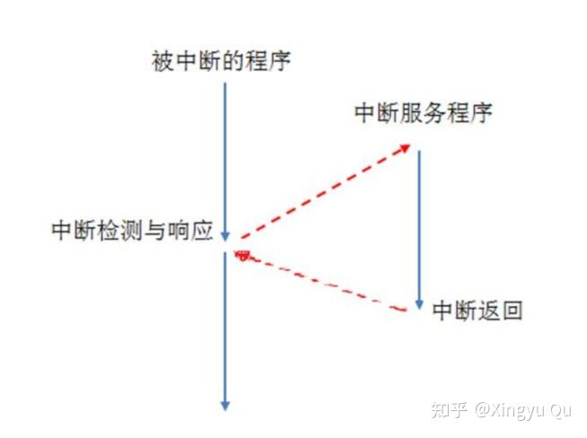
- 多中断系统与优先级
- 多个中断源时，通过中断优先级（无符号数）区分谁更重要；
- 当多个请求同时到来，先处理最高优先级的；
- 中断嵌套：正在处理某中断时，如果允许更高优先级中断再次打断当前中断，就出现嵌套（图上“中断服务程序上再起叉”）。
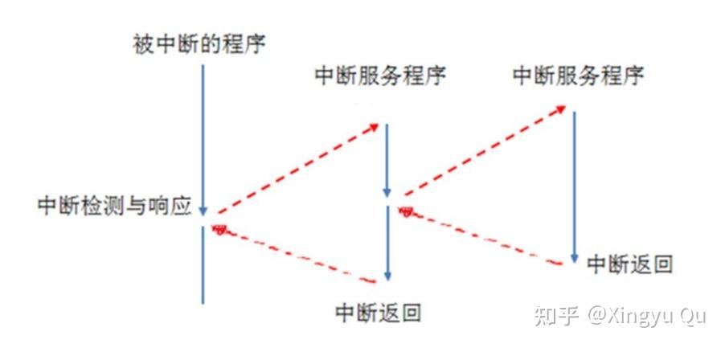
- 多中断时间线图：展示多个中断交错嵌套处理的时间占用情况。
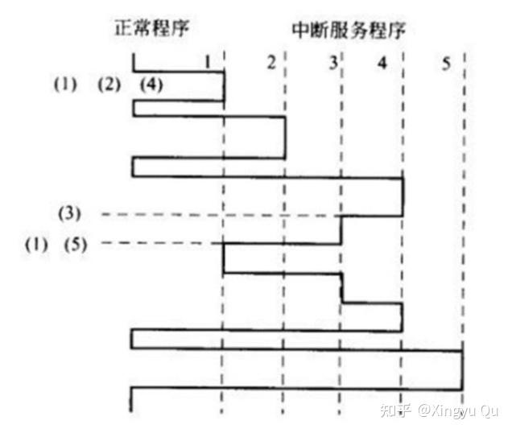
（4）中断管理器
由专门硬件集中管理各中断源：
- 中断请求寄存器：记录各源发来的请求
- 中断屏蔽寄存器：可以屏蔽某些中断
- 中断服务寄存器：记录正在处理和尚未处理完的中断
- 中断优先级分析电路：在未屏蔽的请求中选级别最高者
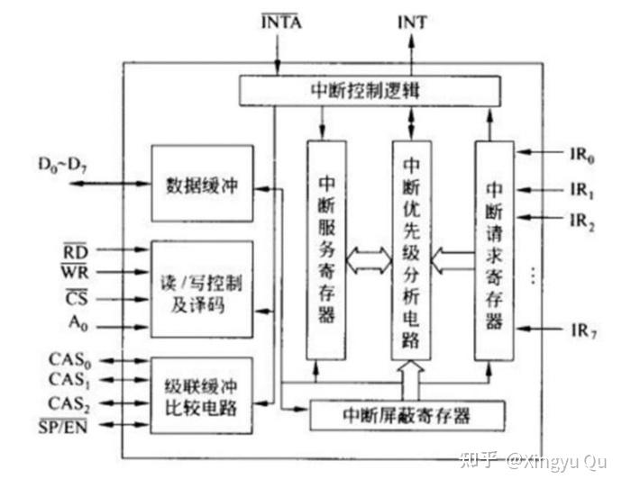
与 CPU 协作过程：
1) 各中断源向管理器发请求；
2) 管理器记录，并向 CPU 发总的中断请求；
3) CPU 在允许中断时检测到请求 → 响应；
4) 管理器收到响应后，把最高优先级中断的类型信息提供给 CPU；
5) CPU 利用中断类型信息查找中断向量表或直接确定服务程序入口，执行服务程序；
6) 服务程序最后通过中断返回指令回到被打断处。
（5）向量中断 vs 查询中断
- 中断类型码：标识中断源类别，用于找服务程序；
- 中断向量：中断服务程序在内存中入口地址；
- 中断向量表：按中断类型码顺序存放所有向量的表。
->向量中断：
- 中断管理器在 CPU 响应后，直接提供“中断类型码”
- CPU 用类型码查向量表，跳到相应服务程序
- 查表在硬件支持下完成 → 快
->查询中断：
- CPU 只知道“有中断”，但不知道是哪一个；
- 在中断响应期间执行一段“查询程序”，按固定顺序检查各中断源状态，谁为 1 就处理谁；
- 查询顺序本身就隐含优先级。
4. DMA 方式
（1）DMA 的动机与思想
- 中断方式的不足：
- 虽然省掉“轮询”，但真正的数据读写还是靠 CPU 执行中断服务程序完成；
- 对大块数据传输，CPU 仍然被大量占用。
- DMA 方式思想：
- 在内存和外设之间增加DMA 控制器，由它代替 CPU 进行批量数据传输；是完全依赖硬件的数据传输方式
- CPU 只在开始和结束时参与（预处理/后处理），中间整个传输过程由 DMA 控制器通过总线完成。
DMA降低了CPU的开销，适合进行大规模数据传输。
（2） DMA 过程中的几个问题
- DMA 请求：设备向 DMA 控制器提出 DMA 请求；
- DMA 控制器向 CPU 请求总线；
- DMA 检测/响应：CPU 检测到 DMA 请求后，让出总线控制权；
- DMA 传送：DMA 控制器接管总线，在内存和设备之间传数据；
- DMA 结束：DMA 传输完成，归还总线给 CPU，并通过中断通知 CPU。
（3）中断 vs DMA 的区别
- 中断：CPU 通过执行“中断服务程序”搬运数据 → 软件方式；
- DMA：专门控制器搬运数据 → 硬件方式；
- 中断一般可以嵌套，DMA 通常不嵌套。
（4）CPU 与 DMA 共享总线的三种方式
- CPU 暂停方式
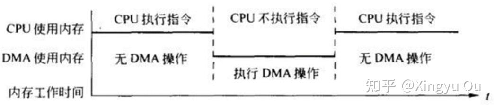
- CPU 完全暂停使用总线，由 DMA 接管；
- 常配合“数据缓冲存储器”使用，以缩短占用时间。
- 周期挪用方式（cycle stealing）
- CPU 和 DMA 同时想用总线时，DMA 抢走一个总线周期用来传一个字；
- I/O 访问优先级高于 CPU。
- 交替访问方式
- 典型前提：内存速度 ≥ 2× CPU 访存速率；
- 在 2Δt 内，一个Δt给 CPU，一个Δt给 DMA，双方交替访问。
（5） DMA 控制器结构与数据传输过程
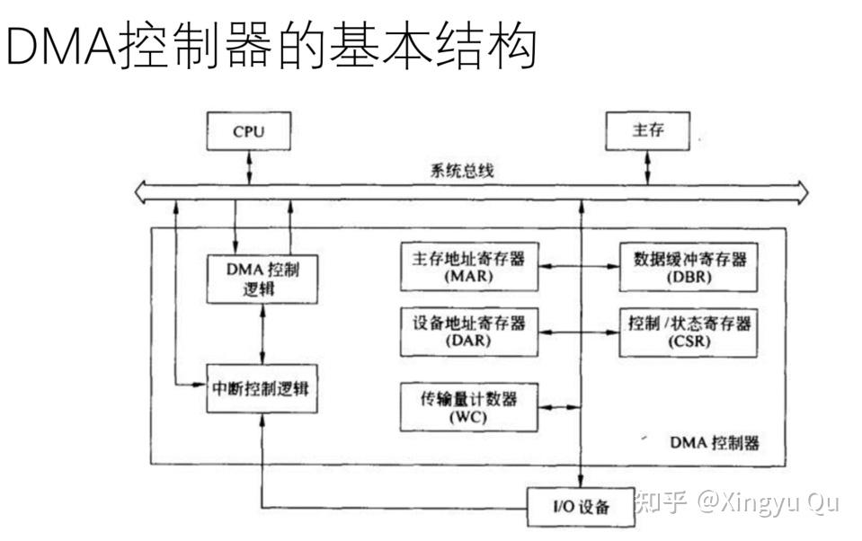
寄存器组：
- 主存地址寄存器（MAR）：记录内存地址，每传一个单位自动累加；
- 设备地址寄存器（DAR）：记录外设地址；
- 传输量计数器（WC）：记录还需传输的数据量，通常倒计数；
- 数据缓冲寄存器（DBR）：必要时暂存数据。
DMA 控制逻辑：预处理/初始化寄存器；接收 DMA 请求；申请总线；在拥有总线时产生各种控制信号完成数据传输。
DMA 中断控制逻辑：传输完成后向 CPU 发送中断，请求后处理或下一次 DMA 预处理。
- DMA数据传输过程：
- 预处理：CPU 设置 DMA 控制器参数（起始地址、长度、方向等）；
- 数据传送：DMA 控制器接管总线批量读写；
- 后处理：DMA 结束，通过中断通知 CPU，CPU 做必要善后。
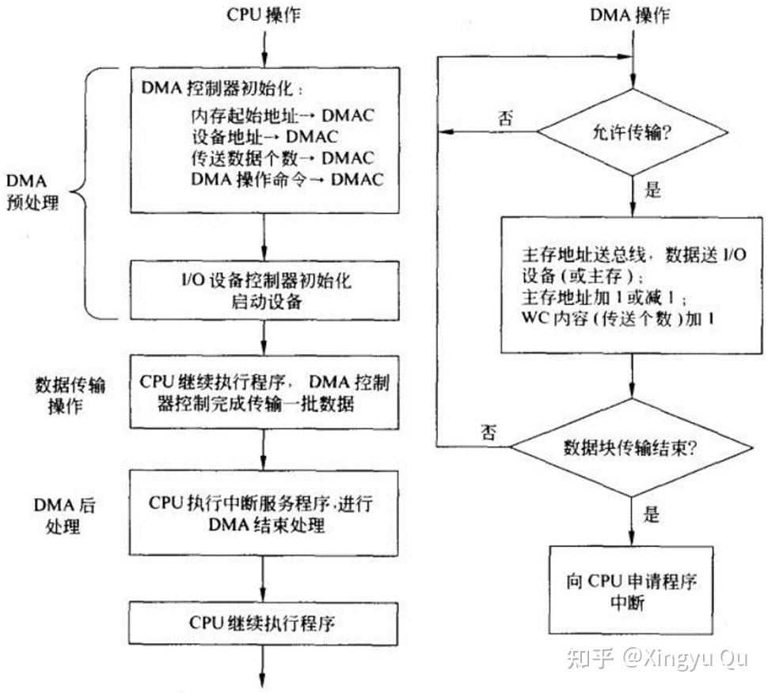
（三）总线
1. 总线概念与分类（P43–47）
（1）概念
连接各部件，进行信息传输的公共通路，是一种“共享传输介质”。任何时刻必须只允许一个设备在总线上发送信号，以避免冲突。
（2）分类
- 按任务分类：
- 内部总线：主机内部各模块之间（CPU、主存、I/O 控制器）；
- 外部总线：主机与外设/其他主机之间；
- 设备总线：专门用于主机与外设的外部总线。
- 按物理位置：片内总线、板内总线、板间总线（系统总线）、外部总线。
- 按传输内容：地址总线、数据总线、控制总线。
- 按一次传送位数：串行总线、并行总线。
- 按定时方式：同步总线、异步总线。
2. 总线标准的五类规范
逻辑规范：每个引脚/信号线的功能、方向、极性、是否三态等；
时序规范：信号出现/消失的时间、信号之间配合的时间关系；
电气规范：电平标准、驱动能力、负载能力（最大可挂模块数）；
机械规范：插槽/插头/插板的形状、尺寸、接插件强度、引脚布局等；
通信协议：特别是串行总线，规定连接方式、数据格式、发送速度、分层协议等。
3. 总线性能指标
- 总线带宽：单位时间可传输的最大数据量，通常 MB/s；与数据线宽度和时钟频率相关。
- 数据总线宽度： 决定一次并行传输的位数，在频率一定时，吞吐量 ∝ 数据宽度。
- 地址总线宽度：决定最大可寻址内存空间：可寻址单元数 = 2^(地址位宽)。
- 总线时钟频率（同步总线）：频率越高，总线操作越快，吞吐量越大。
- 负载能力：总线可连接的模块上限。
4. 总线控制与仲裁
- 总线控制器 / 仲裁器：管理总线使用权。
- 主设备：获得总线使用权的设备；
- 从设备：与主设备交换数据的对端。
- 一次完整的总线使用过程称为总线事务，包括四阶段：
- 申请：设备向仲裁器请求使用总线；
- 仲裁：仲裁器根据优先级决定谁获权；
- 传输：主设备占用总线完成数据传输；
- 结束：释放总线。
- 集中式仲裁：一个仲裁器管理所有请求；
- 并行仲裁：各设备通过独立请求线并行上报，仲裁器并行判定；
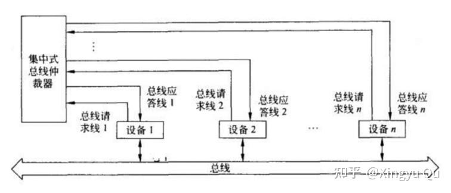
- 串行仲裁：优先级编码 + 菊花链方式，裁决信号沿设备排队传播。
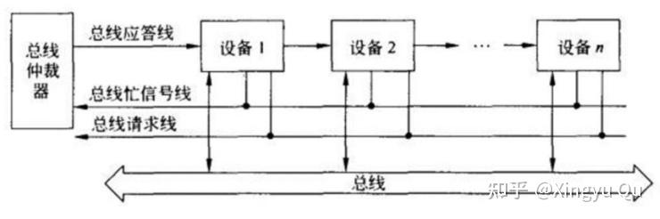
5. 计算机系统总线结构
单总线结构
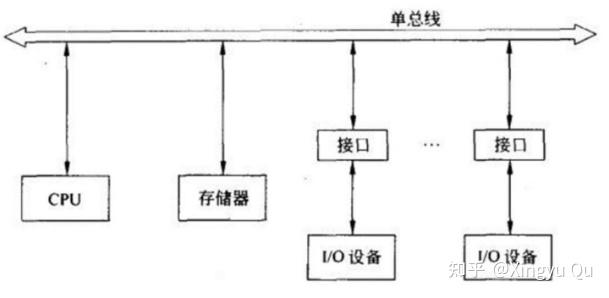
- 所有模块（CPU、主存、I/O 控制器）都挂在同一系统总线上，所有通信都经这条总线完成；
- 结构简单，成本低，但冲突多，带宽容易成为瓶颈。
双总线结构
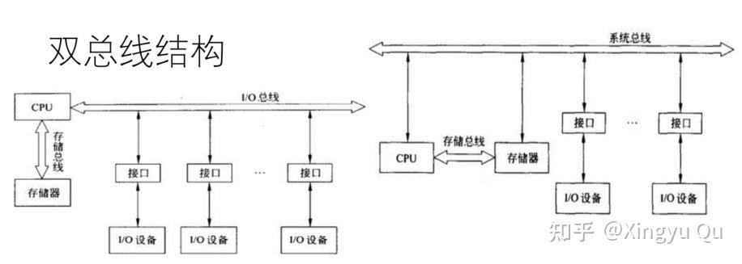
- 新增内存总线：CPU ↔ 内存走内存总线；CPU/内存 ↔ 外设走系统总线；
- 降低内存访问与 I/O 访问的竞争。
多总线结构
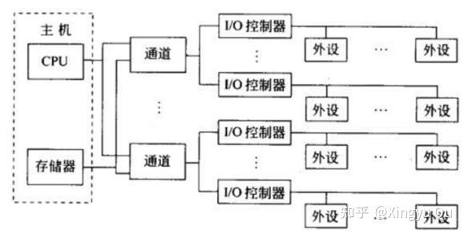
- 在双总线基础上增加 I/O 总线甚至更多层次
- 在计算机系统的各部件之间采用多条各自独立的总线来构成分层次的信息通路
多层次结构
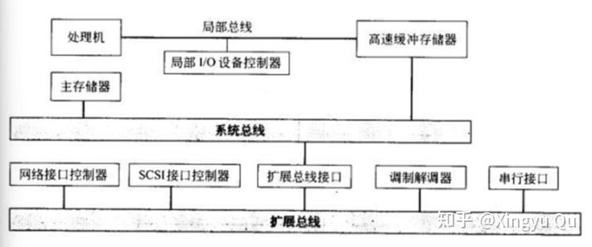
根据系统功能模块性能上的要求，设置不同层次、不同种类的总线，不会完全拘泥于上述三种总线结构；可分层设计，高性能模块用高带宽总线，低速设备挂低速总线
6. 总线定时：同步 vs 异步
同步总线：
- 所有事件由同一时钟脉冲序列统一定时；
- 总线必须有一条时钟线；
- 总线周期：完成一次数据交换所需时间，通常包含若干个时钟周期；（工作频率不一定等于时钟频率）
- 所有设备按照统一时钟边沿启动动作 → 控制简单，时序固定；
异步总线：
- 事件发生依赖前一事件的完成，通过握手信号协同；
- 不需要全局时钟，适合不同速度设备协调，但时序复杂。
7. 常用总线示例
- 内部总线：
- PCI：90 年代为解决图形/多媒体瓶颈提出的局部总线标准；
- PCI Express：全新第三代总线，采用串行点对点链路，而不是简单升级 PCI。
- 设备总线：
- SCSI：支持多种外设（磁盘、磁带、扫描仪等）的并行外部总线；
- ATA / IDE：主板与硬盘等外存之间的总线标准；
- USB：通用串行总线，标准化外设连接方式，支持即插即用和热插拔。
四、接口与外设
1. I/O 接口的功能与结构
- 设置接口的原因：
- 不同设备在数据格式、电平、速度、传输方式等方面差异巨大；
- 通过接口进行统一管理和控制，一个接口可以管理多个设备。
- 接口的基本功能：
- 数据格式转换；
- 信号电平转换；
- 并/串转换、数/模转换；
- 端口寻址；
- 数据缓冲；
- 设备控制与管理。
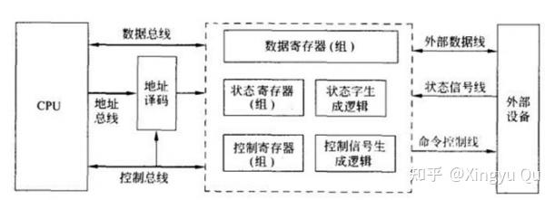
- 典型接口内部寄存器：
- 数据寄存器：CPU & 设备之间数据中转站，可读可写；
- 状态寄存器：记录接口与设备状态，仅供 CPU 读，用于查询/判断是否可读写；
- 控制寄存器：CPU 写入控制命令，控制接口/设备工作方式。
- 接口分类：
- 并行/串行接口；
- 同步/异步接口；
- 数字/模拟接口。
2. 常用外部设备分类
- 输入设备：键盘、手写板、数字化仪、鼠标、摄像头、扫描仪等；
- 输出设备：打印机、显示器、绘图仪、扬声器等；
- 外存储器：磁带、磁盘、光盘、移动存储设备等；
- 终端设备：本地/远程终端、智能终端/哑终端等（网络环境下用户与主机的接口设备）；
- 其他：数据采集装置、传感器、A/D、D/A 转换器、软盘数据站等。
3. 典型外设的工作原理
（1） 键盘
- 行列扫描法：
- 键盘按键组成行×列矩阵，通过不断扫描行列线，检测闭合位置得到按键编码（扫描码）；
- 键盘逻辑通过串行方式将扫描码送到主板上的键盘接口，接口再并行送给 CPU，并通过中断方式通知。
（2） 光电鼠标
- 底部发光二极管照亮表面，通过透镜形成图像；
- 内部专用图像分析芯片连续分析图像序列中的特征点位置变化 → 得到移动方向与距离 → 光标运动。
（3） LCD 显示器 & 显示适配卡
- 液晶显示器：
- 液晶夹在两块偏振玻璃中间，电极按行列划分，对应每个像素；
- 不同电荷改变液晶分子排列，对光偏振方向产生影响 → 某些颜色透过，形成图像。
- 显示适配卡：
- 主机与显示器之间的接口电路；
- 将主机的显示数据写入显示缓存（VRAM）；
- 屏幕显示通过以一定帧频不断从 VRAM 中刷新实现。
- 字符显示：
- VRAM 存的是“字符代码”，按行列对映屏幕位置；
- 字符发生器 ROM 将字符代码映射为点阵，再送到移位寄存器输出视频信号。
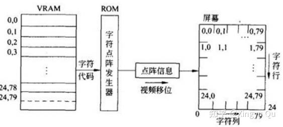
- 图形显示：
- VRAM 存的是像素位图：按行列划分为点，每点对应字节或字节中某位；
- 图形字节直接送移位寄存器输出，不需 ROM。
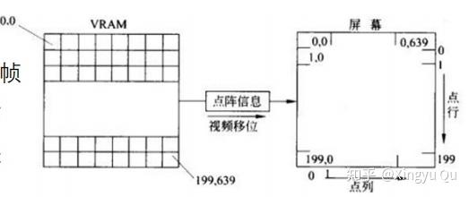
（4） 硬盘
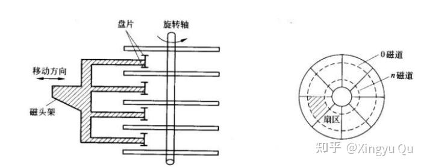
- 结构：
- 驱动器：旋转轴、电机、磁头定位机构、读写电路、数据传送电路；
- 控制器：接收主机命令与数据，转换为驱动器可识别的控制命令与格式，可控制多台驱动器；
- 盘片：铝合金基体，多片叠加成组。
- 几何概念：
- 盘面、磁道、扇区、扇段、柱面；
- 一个磁道被划分成若干扇区（sector），扇区再组成扇段（sector segment）作为基本交换单位。
- 硬盘地址：柱面号 + 盘面号 + 扇区号（多驱动器时还加驱动器号）。
- 数据交换：
- 主存 ↔ 硬盘通常通过 DMA 或通道完成；
- 为保证写入可靠性，常“写后读”对比主存内容，不一致则通过中断报告错误；
- 扇段内部布局：头部空白、序标（地址+同步信号）、数据、校验字（循环冗余校验）、尾部空白。
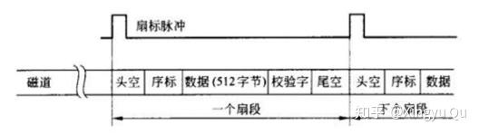
- 寻址时间：
具体的计算可见文章：
计算机组成与体系结构 25fall 第 10 讲- 定位时间：磁头从当前位置移动到目标磁道的时间；
- 旋转延迟：等待盘片旋转到目标扇区下的时间，平均为半圈时间；
- 二者之和为寻址时间；
- 读写总是从扇区边界开始，一次交换一个扇段；若数据不足一个扇段，余下部分重复最后一位填充。
后记
本讲完成 I/O 与总线部分，也为本系列的 13 篇课程笔记收尾。